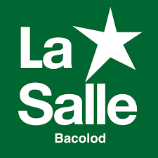

Top Schools in Bacolod City
University Of St.La Salle

The University of St. La Salle, a non-stock and non-profit corporation, was established in 1952 by three American Brothers under the Philippine Province of the Brothers of the Christian Schools, an international institute of religious Brothers dedicated to the human and Christian education of the young, especially the poor.
Next Page →
←Previous Page